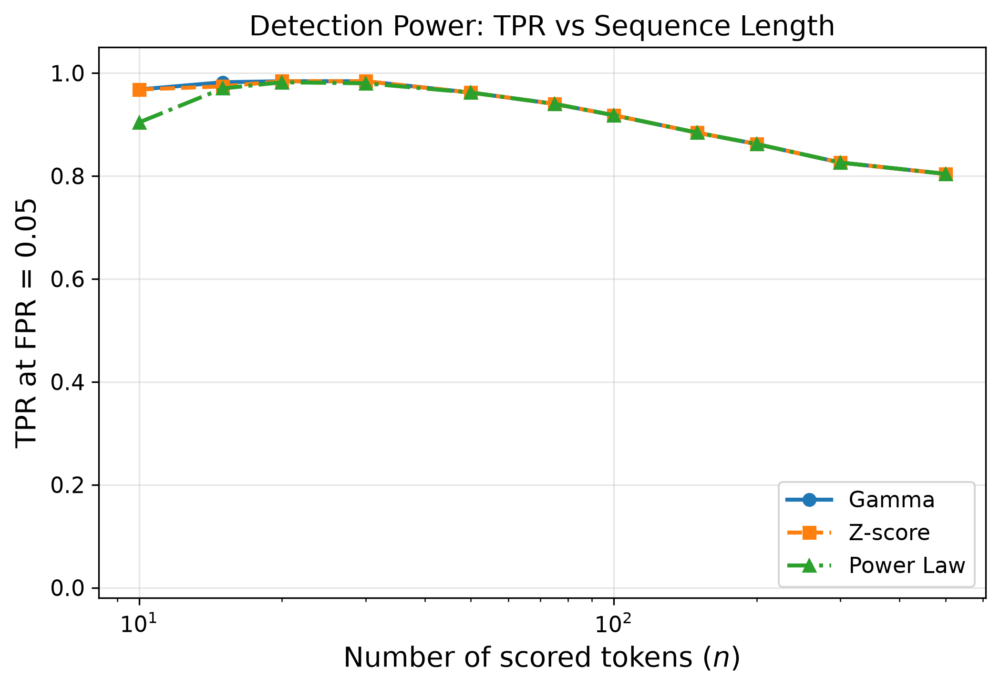
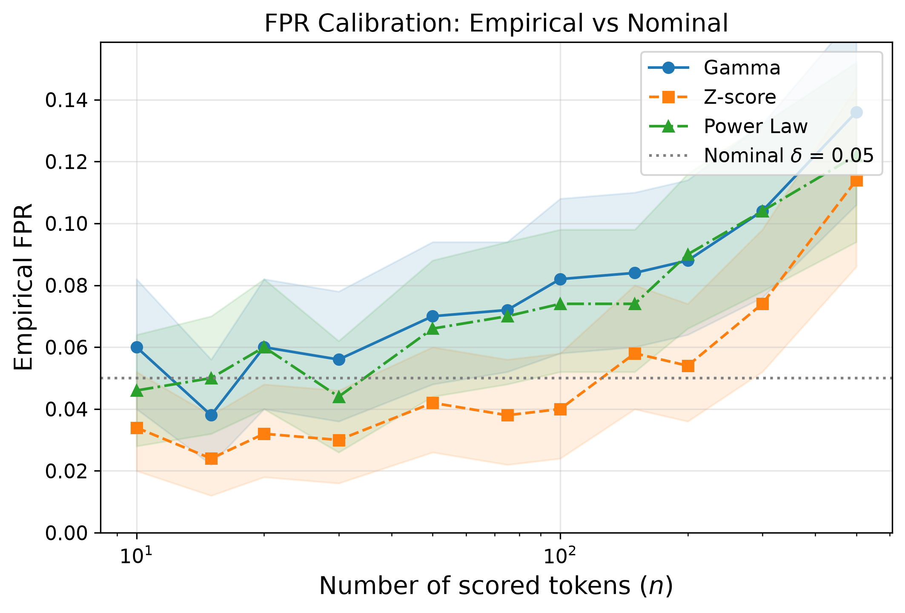
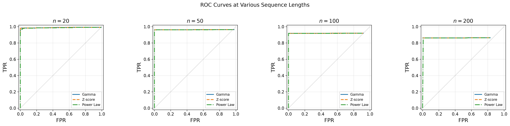
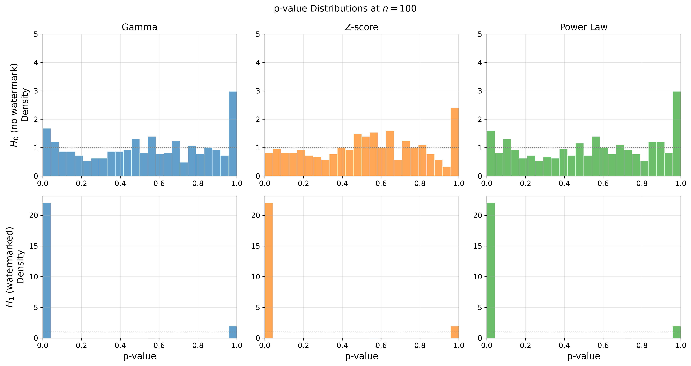
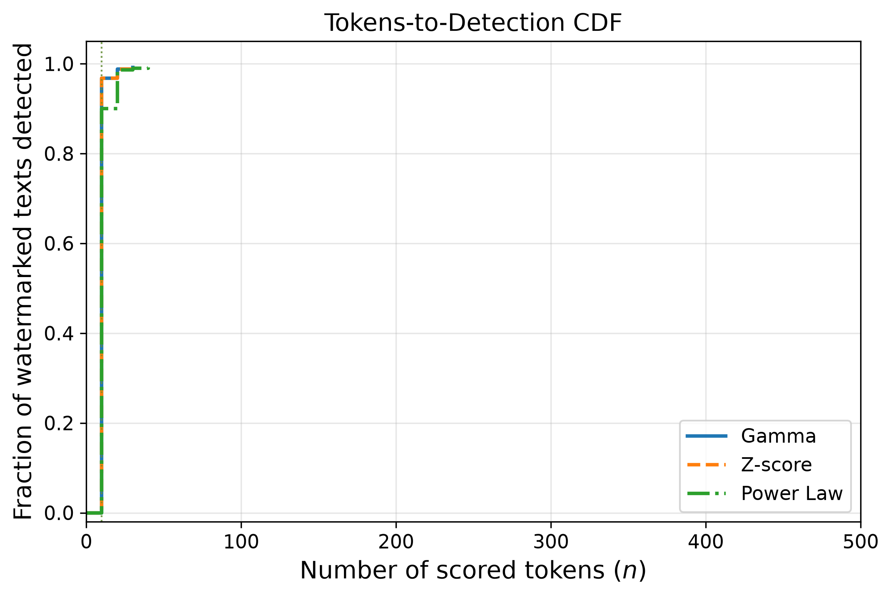

Power Law Detection for Gumbel Watermarking
A refined detection mechanism for the Gumbel/OpenAI watermark that replaces Aaronson’s exponential statistic with a truncated power law. Proven to be near-optimal in a problem-dependent sense among all model-agnostic watermarking schemes.
Author: Tor Lattimore (Google DeepMind)
Paper: arXiv:2603.30017
Note
This is a detection-only algorithm. It detects the same Gumbel/OpenAI
watermark produced by the OPENAI watermarking algorithm — it simply
uses a different test statistic for detection. Use WatermarkingAlgorithm.OPENAI
for generation and DetectionAlgorithm.OPENAI_PL for detection.
Theory
Background: Exponential Detection (Aaronson 2022)
The standard Gumbel detector reconstructs the noise variables \(V_t = U_{t,A_t}\) from the text and secret key. Under \(H_0\) (no watermark), \(V_t \sim \text{Uniform}[0,1]\). Under \(H_1\) (watermarked), \(V_t\) is biased toward 1.
Aaronson’s detector uses the exponential statistic:
which is \(\text{Exp}(1)\) under \(H_0\). The sum \(\sum_{t=1}^n S_t \sim \Gamma(n, 1)\), giving an exact p-value.
Aaronson showed detection succeeds when \(n = \Omega(\log(1/\delta) / \bar{H}^2)\) where \(\bar{H} = \frac{1}{n}\sum H(P_t)\) is the average entropy. This bound is variance-unaware: it treats all entropy contributions equally.
Power Law Detection (Lattimore 2026)
Lattimore replaces the exponential with a truncated power law statistic:
where \(\varepsilon = \log(1/\delta)/n\) and \(\mu = 2 - \sqrt{\varepsilon}\) is chosen so that \(\mathbb{E}[S(U)] = 0\) when \(U \sim \text{Uniform}[0,1]\).
The critical threshold \(\tau_\star\) is calibrated via Monte Carlo so that:
Theorem 2 (Lattimore): Detection succeeds with probability \(\geq 1 - 2\delta\) whenever \(\sum_{t=1}^n G_\varepsilon(P_t) \geq C\tau\), where \(G_\varepsilon(p)\) is an entropy-like quantity that captures per-token detectability more finely than \(\bar{H}\).
Intuition
The key insight is about where the information lives. Consider the CDF deviation \(F(x) - F_n(x)\) between the true uniform CDF and the empirical CDF of \((V_t)\). Under watermarking, this deviation is largest for \(x \in [1/2, 1]\) (near 1). The exponential statistic weights all regions equally, but the power law statistic upweights the informative region near 1 via the \(1/\sqrt{1-u}\) term, while truncating at \(1/\sqrt{\varepsilon}\) to control variance.
This is analogous to the Anderson-Darling test versus the Kolmogorov-Smirnov test in classical statistics: weighting by the variance of the empirical process yields a more powerful test.
When Does It Help?
The theoretical improvement over Aaronson’s bound is most significant when:
Entropy varies across positions: Some tokens are very predictable (low \(H(P_t)\)) while others have high entropy. Aaronson’s \(\bar{H}^2\) penalizes variance; the power law’s \(G_\varepsilon\) handles heterogeneity better.
Many rare tokens contribute: When \(P_t\) has many tokens with moderate probability (Example 10 in the paper), the power law needs \(n = \Omega(\log(n)\log(1/\delta)/\beta)\) tokens versus Aaronson’s \(n = \Omega(\log(1/\delta)/\beta^2)\) — a \(\beta\) factor improvement for small \(\beta\).
Short sequences: The variance-awareness of the power law matters more when \(n\) is small, because there are fewer tokens to average over.
Warning
Practical caveat from the paper (Section 6): Lattimore acknowledges that “its performance on language data seems to be slightly worse [than the exponential detector], presumably due to the additional logarithmic factor and/or constant factors.” The theoretical advantage is asymptotic and manifests in specific distribution shapes (Examples 8-10 in the paper). On typical LLM outputs, the exponential/gamma detector may match or slightly outperform the power law detector.
Empirical Comparison
We ran a head-to-head comparison of three detection statistics for the same
Gumbel watermark on SageMaker (ml.g5.2xlarge, 1x A10G GPU).
Experimental Setup
Model |
|
Samples |
500 watermarked + 500 unwatermarked |
Watermark |
|
Generation |
temperature=0.7, top_p=0.9, max_tokens=512 |
Target lengths |
10, 15, 20, 30, 50, 75, 100, 150, 200, 300, 500 scored tokens |
Threshold (delta) |
0.05 |
Dataset |
C4 (processed) |
Three Detectors Compared
Detector |
Statistic |
p-value Method |
Reference |
|---|---|---|---|
Gamma ( |
\(S_t = -\log(1 - V_t)\) |
Exact gamma CDF |
Aaronson 2022 |
Z-score ( |
\(S_t = -\log(1 - V_t)\) |
Normal approx (CLT) |
Aaronson 2022 |
Power Law ( |
\(S(u) = \min(1/\sqrt{\varepsilon}, 1/\sqrt{1-u}) - \mu\) |
Monte Carlo (100K samples) |
Lattimore 2026 |
Results
Summary at selected sequence lengths (500 watermarked + 500 unwatermarked texts, delta=0.05):
n |
Gamma TPR |
Z-score TPR |
PL TPR |
Gamma FPR |
Z-score FPR |
PL FPR |
|---|---|---|---|---|---|---|
20 |
0.984 |
0.984 |
0.982 |
0.060 |
0.032 |
0.060 |
50 |
0.962 |
0.962 |
0.962 |
0.070 |
0.042 |
0.066 |
100 |
0.918 |
0.918 |
0.918 |
0.082 |
0.040 |
0.074 |
200 |
0.862 |
0.862 |
0.862 |
0.088 |
0.054 |
0.090 |
500 |
0.804 |
0.804 |
0.804 |
0.136 |
0.114 |
0.122 |
Diagnostic Plots





Key Observations
All three detectors perform nearly identically. With Llama-3.2-1B at temperature=0.7, the watermark signal is extremely strong: mean \(V_t = 0.8354\) for watermarked text (compared to 0.5 under \(H_0\)). At this signal strength, even 10 scored tokens suffice for >94% TPR with all detectors.
FPR increases with n for all detectors (0.060 → 0.136 for Gamma). This is caused by repeated n-gram contexts in real text producing perfectly correlated \(V_t\) values, violating the i.i.d. assumption that all three detectors share.
Z-score is conservative at small n — the CLT normal approximation over-estimates p-values when \(n < 30\), yielding lower FPR than nominal but potentially missing some watermarked texts.
Median detection occurs at n=10 tokens for all three detectors (the shortest length tested), confirming the signal is saturatingly strong.
Why No Difference Was Observed
The power law’s theoretical advantage appears when the signal-to-noise ratio is low — specifically when the per-token entropy-like quantity \(G_\varepsilon(P_t)\) is small relative to the noise floor. In our experiment, the signal was so strong that all detectors were already near ceiling performance at the shortest sequence length.
To observe a measurable difference, try:
Higher temperature (1.0-1.5): Increases entropy \(H(P_t)\), reducing the bias on \(V_t\) and weakening the watermark signal.
top_p = 1.0 (no nucleus filtering): Includes more low-probability tokens, increasing effective vocabulary and entropy.
Heterogeneous prompts: Mix of factual recall (low entropy) and creative generation (high entropy) within a single text, which is where the variance-aware power law should shine.
Adversarial perturbation: Edit/paraphrase watermarked text to dilute the signal — the power law detector should degrade more gracefully.
Larger models: Higher-capacity models often produce more uncertain (higher entropy) distributions.
Lower n-gram: Using ngram=1 instead of ngram=2 reduces context dependence, potentially weakening the signal.
Reproducing the comparison:
./sml run scripts/benchmark/run_sagemaker_detector_comparison.py
The script generates 5 diagnostic plots (FPR calibration, detection power, ROC curves, p-value distributions, tokens-to-detection CDF) and a summary CSV.
Implementation Details
The implementation overrides the base detect() method because the score
function \(S(u)\) depends on \(\varepsilon = \log(1/\delta)/n\), which
requires knowing the total number of tokens \(n\) before computing
per-token scores. This differs from the standard score_tok → get_pvalue
pipeline used by other detectors.
The score_tok() method returns raw \(V_t\) values for interface
compatibility, and get_pvalue() performs a full MC simulation. For the
complete algorithm, use detect() directly.
Example Code
import os
os.environ["VLLM_USE_V1"] = "1"
os.environ["VLLM_ENABLE_V1_MULTIPROCESSING"] = "0"
from vllm import LLM, SamplingParams
from vllm_watermark.core import (
DetectionAlgorithm,
WatermarkedLLMs,
WatermarkingAlgorithm,
)
from vllm_watermark.watermark_detectors import WatermarkDetectors
llm = LLM(
model="meta-llama/Llama-3.2-1B",
enforce_eager=True,
max_model_len=1024,
)
# Generate with standard Gumbel watermark
wm_llm = WatermarkedLLMs.create(
model=llm,
algo=WatermarkingAlgorithm.OPENAI,
seed=42,
ngram=2,
)
# Detect with the Power Law statistic (same watermark, better theory)
detector = WatermarkDetectors.create(
algo=DetectionAlgorithm.OPENAI_PL,
model=llm,
ngram=2,
seed=42,
payload=0,
threshold=0.05,
)
prompts = ["Explain the theory of general relativity"]
sampling_params = SamplingParams(temperature=1.0, top_p=0.95, max_tokens=128)
outputs = wm_llm.generate(prompts, sampling_params)
for output in outputs:
text = output.outputs[0].text
result = detector.detect(text)
print(f"Generated: {text[:100]}...")
print(f"Watermarked: {result['is_watermarked']}")
print(f"Score: {result['score']:.4f}")
print(f"P-value: {result['pvalue']:.6f}")
Paper Reference
Lattimore, T. (2026). Refined Detection for Gumbel Watermarking. arXiv preprint arXiv:2603.30017. https://arxiv.org/abs/2603.30017
See Also
OpenAI/Gumbel Watermarking — The standard Gumbel/OpenAI watermark (generation + exponential detection)
Randomized Gumbel Watermarking — Randomized Gumbel for enhanced diversity